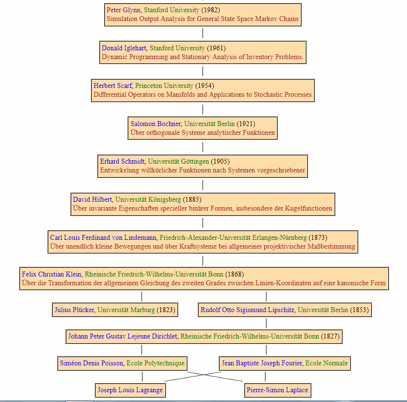

News
- [2026.03] Prompt Bank was awarded the 2025 DeepMind Data Science Breakthrough Award.
- [2025.07] Gemini 2.5: Core Contributor for Multimodal Long Context PDF understanding and first Google I/O contribution!
- [2025.04] Presented LLM Loss Analyzer demo at Google DataVerse Summit 2025.
- [2024.06] Grail went public on the NASDAQ.
- [2024.05] Graduated as a Fusion Fellow for the 2024 Venture Fellowship Program.
- [2021.12] Graduated from Stanford University with Ph.D. in Computational Mathematics and Ph.D. minor in Management Science and Engineering.
- [2021.07] Graduated the Stanford Ignite Executive Program from Stanford Graduate School of Business.
- [2020.04] The Wall Street Journal reported our work on the Stanford Hospital Resource Calculator during the pandemic.
Working Experiences
Google, Core ML Data
Jan 2025 - Present
• Gemini Post-training: Improved Flash performance for financial document Q&A from 54.42% to 66.50%.
• Frontier Safety: Conducted APO experiments, achieving 0.969 recall for misuse detection pipelines.
• Automated Tooling: Architected an end-to-end Automated Loss Pattern Analysis Tool used across AI DS teams.
• Frontier Safety: Conducted APO experiments, achieving 0.969 recall for misuse detection pipelines.
• Automated Tooling: Architected an end-to-end Automated Loss Pattern Analysis Tool used across AI DS teams.
Grail, LLC
Dec 2022 - Oct 2024
• Cancer Detection: Focused on multi-modal data fusion and classifier calibration for early signal predictors.
Uber Technologies
Nov 2021 - Dec 2022
• Algorithmic Pricing: Led marketplace-wide launch of pricing models to 75% of Uber's global business.
Education
Stanford University
Sep 2016 - Dec 2021
Advisors: Prof. Peter Glynn, Prof. Jose Blanchet.
Peking University
Sep 2012 - Jul 2016
Double Major in Economics.

Selected Publications
Gemini 2.5: Pushing the frontier with advanced reasoning, multimodality, long context, and next generation agentic capabilities
Surgical Scheduling via Optimal Transport
Optimal transport and healthcare operations
Honors & Awards
• DeepMind Data Science Breakthrough Team Award, Google, 2026.
• First Place, Stanford Citadel Datathon (Top 1%), 2019.
• Bronze Medal, 6th S.T.Yau College Student Mathematics Contest, 2016.
• First Prize, National College Student Physics Olympics, 2014.
• First Prize, National Physics Olympics Competition, China, 2011.
• First Place, Stanford Citadel Datathon (Top 1%), 2019.
• Bronze Medal, 6th S.T.Yau College Student Mathematics Contest, 2016.
• First Prize, National College Student Physics Olympics, 2014.
• First Prize, National Physics Olympics Competition, China, 2011.
Beyond Research
I am a professional-level Guzheng performer (Performance Grade 10) and have received honors in international music competitions. I am also an advanced skier (double black diamond level) and maintain a daily training regimen in ballet, swimming, and yoga. Currently, I am also exploring professional modeling.